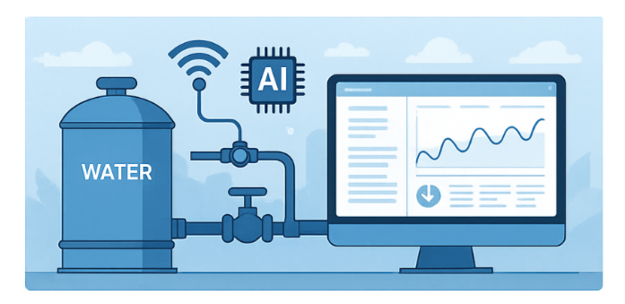

The AI-Powered Smart Water Management System is a groundbreaking initiative that integrates IoT devices, real-time analytics, and AI-driven automation. It is designed to optimize water consumption across campuses, smart cities, and industrial environments. By continuously analyzing sensor data from pipelines, tanks, and meters, the system detects leaks instantly, forecasts water usage trends, and automates pump and valve operations for maximum efficiency.
Built using edge computing and scalable cloud infrastructure, this system also supports integration with SCADA and legacy systems. With predictive alerts and an intuitive dashboard, administrators can proactively manage water resources while minimizing wastage and ensuring sustainability. This innovation is not just a solution—it's a step toward water resilience in the face of climate challenges.
| Feature |
Technology |
Impact |
| Real-Time Monitoring |
IoT Sensors |
Instant Leak Detection |
| Predictive Maintenance |
AI + ML Models |
Reduces Downtime |
| Usage Forecasting |
Big Data Analytics |
Resource Optimization |
| Remote Automation |
Cloud + SCADA |
Smart Distribution |